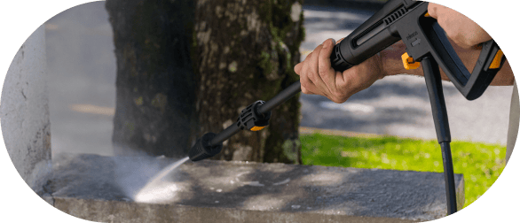
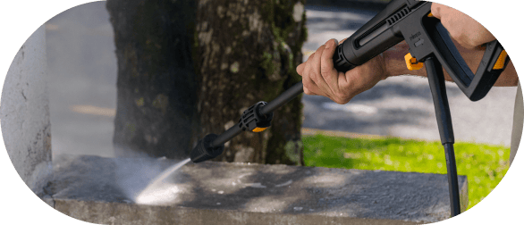

Desobstruidora e Lavadora de Alta Pressão
WL 2660 Turbo Ultra
Desobstruidora e
Lavadora de Alta Pressão
WL 2660 Turbo Ultra
Máximo desempenho
de limpeza para suas tarefas
Seja em sua casa, jardim, veículo ou local de trabalho, descubra como é fácil manter seu espaço impecável com economia, sem abrir mão da precisão das desobstruidoras e lavadoras de alta pressão WAP!
Pressão de 2000 PSI
Garante uma limpeza profunda,
que facilita as tarefas desafiadoras
presentes na sua rotina.
Vazão de 420 L/H
Proporciona rapidez e eficiência
para o trabalho diário com
economia de água e tempo.
Bico turbo
Potencializa sua lavadora para
encarar e vencer até as sujeiras mais
resistentes sem esforço.
Dobro de vantagens
Conquiste a limpeza completa e eficiente com uma lavadora de alta pressão equipada com a mangueira desobstruidora. Com ela, você tem o poder de remover vários tipos de sujeiras com facilidade, além de desentupir canos, calhas e tubulações utilizando jatos de água potentes.
Calhas
Canos

Banheiros
Acabe com as sujeiras
mais profundas sem esforço
Recurso de limpeza para
ambientes renovados
Com potência de 1800W, a Desobstruidora e Lavadora de Alta Pressão WAP WL 2660 Turbo é ideal para enfrentar desafios de limpeza pesada sem esforço, com resultados satisfatórios em diferentes superfícies.
A pressão máxima de 2000 PSI e vazão de 420 L/h transformam tarefas cansativas do cotidiano em trabalhos rápidos. Com alta pressão e um pacote completo de acessórios de qualidade, a lavadora é capaz de atender a todas as suas demandas.
Os suportes exclusivos acomodam a mangueira, pistola, bico regulável e baioneta, mantendo os equipamentos ao seu alcance.
Proporciona a versatilidade necessária para otimizar a rotina, tornando-se a aliada perfeita para qualquer desafio de limpeza.
Experimente ter controle total com o sistema eletrônico "Stop Total" e interrompa o fluxo de água da lavadora quando não houver necessidade de uso.
Alcança até 5 metros sem trocar de tomada + 3 metros de extensão, a mangueira de alta pressão torna a limpeza muito mais prática e você ganha muito mais autonomia.
 

Faxinas eficientes com menos água
Combinando força e eficiência, a Desobstruidora e Lavadora de Alta Pressão WAP é indicada para limpeza pesada em múltiplas superfícies, desde pisos e paredes até veículos e móveis.
Reconhecida por ser uma forma prática e econômica de realizar higienização profunda, a WL 2660 Turbo Ultra oferece até 80% de economia de água em comparação aos métodos tradicionais, como o uso de mangueiras de jardim.
Além de alcançar até 5 metros sem trocar de tomada, o cabo de alimentação proporciona mobilidade à rotina de lavagem dos ambientes.
A conexão do filtro com engate rápido é extremamente útil para conectar a mangueira de jardim no bocal de água em um instante.
Os 3 metros de extensão da mangueira de alta pressão oferecem mais autonomia para tornar a limpeza mais fácil.
O bico turbo cria padrões de jatos de água concentrados e rotativos, que cobrem uma área maior de limpeza com eficácia.
O dispositivo de engate rápido conecta e desconecta acessórios da máquina com facilidade, tornando as tarefas de limpeza descomplicadas.
-
 A conexão do filtro com engate rápido é extremamente útil para conectar a mangueira de jardim no bocal de água em um instante.
A conexão do filtro com engate rápido é extremamente útil para conectar a mangueira de jardim no bocal de água em um instante.
IDEAL PARA LIMPEZAS EM


Liberte o poder
da limpeza 2 em 1!
Descubra uma realidade onde a limpeza é mais rápida, sem perder eficiência, ao eliminar sujeiras impregnadas. Utilize acessórios de ponta, econômicos e seguros para uma rotina que valoriza o seu tempo